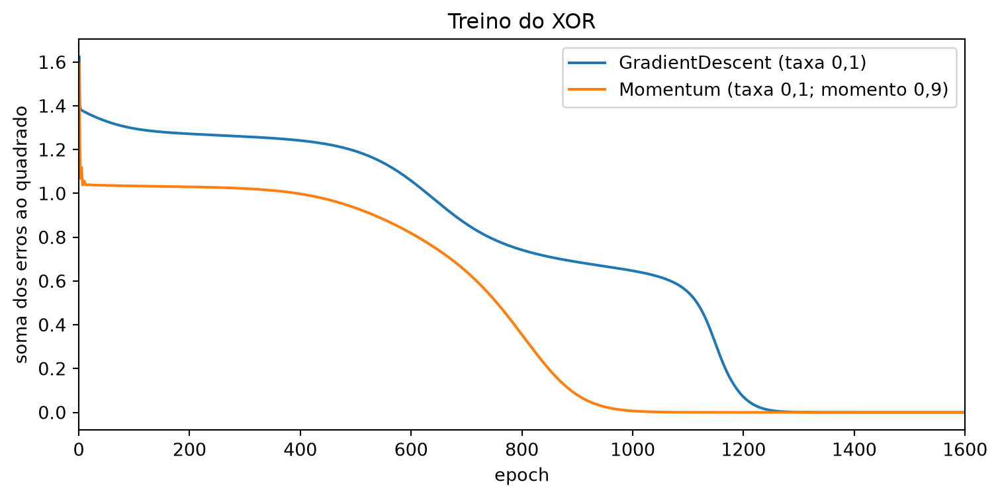

import random
from typing import List, Iterable
from scratch.deep_learning import (Layer, Linear, Sequential, Sigmoid, Tensor,
tensor_combine, tensor_sum, zeros_like, shape)Perda e Otimização
Nota
Esta seção corresponde a Loss and Optimization e a Example: XOR Revisited, do capítulo 19 de Grus (2019).
A rede está montada e sabe propagar gradientes. Falta o que fica fora dela: quem mede o erro e quem dá o passo. Nos capítulos anteriores, essas duas coisas apareciam escritas dentro do laço de treino, misturadas com tudo o mais. Aqui elas viram duas abstrações, pelo mesmo motivo de sempre: para poder trocá-las sem reescrever o resto.
A perda
class Loss:
def loss(self, predicted: Tensor, actual: Tensor) -> float:
"""Quão boas são as nossas previsões? (Números maiores são piores.)"""
raise NotImplementedError
def gradient(self, predicted: Tensor, actual: Tensor) -> Tensor:
"""Como a perda muda quando as previsões mudam?"""
raise NotImplementedErrorUma perda é um par: um número que diz o quanto erramos, e o gradiente desse número em relação às previsões. Repare que a segunda parte é exatamente o que a rede espera receber em backward — a perda é a fonte do gradiente que atravessa a rede inteira de trás para a frente.
A soma dos erros ao quadrado já apareceu tantas vezes neste livro que a implementação não guarda surpresa; o único cuidado é usar tensor_combine, para que ela funcione com tensores de qualquer forma:
class SSE(Loss):
"""Função de perda que calcula a soma dos erros ao quadrado."""
def loss(self, predicted: Tensor, actual: Tensor) -> float:
# Calcula o tensor das diferenças ao quadrado
squared_errors = tensor_combine(
lambda predicted, actual: (predicted - actual) ** 2,
predicted,
actual)
# E soma tudo
return tensor_sum(squared_errors)
def gradient(self, predicted: Tensor, actual: Tensor) -> Tensor:
return tensor_combine(
lambda predicted, actual: 2 * (predicted - actual),
predicted,
actual)
sse = SSE()
assert sse.loss([1, 2, 3], [10, 20, 30]) == 9 ** 2 + 18 ** 2 + 27 ** 2
assert sse.gradient([1, 2, 3], [10, 20, 30]) == [-18, -36, -54]
NotaO fator 2 voltou
A seção 15.3 tem uma caixa de aviso sobre um 2 que faltava: a derivada de \((o - t)^2\) é \(2(o - t)\), e o código de lá calculava output - target, sem o 2. O efeito prático era só dobrar ou não a taxa de aprendizado, mas o comentário do código dizia “o gradiente da perda quadrática” quando era o gradiente da metade dela.
Aqui o 2 está escrito. SSE.loss e SSE.gradient são consistentes uma com a outra, e o número que se acompanha na tela é o mesmo cujo gradiente está sendo descido. É uma correção pequena, e ela só ficou fácil de fazer porque a perda virou uma coisa nomeada: quando o cálculo da perda e o do gradiente moram no mesmo objeto, a inconsistência entre os dois fica visível.
O otimizador
Até aqui, todo gradiente descendente do livro foi feito à mão, com uma linha assim:
theta = gradient_step(theta, grad, -learning_rate)É o gradient_step do Capítulo 5, a função de cinco linhas que a regressão linear, a múltipla, a logística e a rede do capítulo anterior chamaram sem exceção: ela recebe um vetor de parâmetros, um gradiente do mesmo tamanho, e devolve o vetor andado.
Isso não serve mais, por duas razões. A primeira é que uma rede tem muitos tensores de parâmetros, de formas diferentes, e todos precisam ser atualizados. A segunda é que queremos poder usar variantes mais espertas do gradiente descendente sem reescrever nada.
class Optimizer:
"""
Um otimizador atualiza os pesos de uma camada (no lugar) usando
informação conhecida pela camada, pelo otimizador, ou por ambos.
"""
def step(self, layer: Layer) -> None:
raise NotImplementedError
class GradientDescent(Optimizer):
def __init__(self, learning_rate: float = 0.1) -> None:
self.lr = learning_rate
def step(self, layer: Layer) -> None:
for param, grad in zip(layer.params(), layer.grads()):
# Atualiza param com um passo de gradiente
param[:] = tensor_combine(
lambda param, grad: param - grad * self.lr,
param,
grad)O zip(layer.params(), layer.grads()) é onde a correspondência posicional da seção 16.2 é usada. O otimizador não sabe o que aquele tensor é — se é uma matriz de pesos, um vetor de vieses ou outra coisa qualquer. Ele sabe que existe um gradiente na mesma posição, e isso basta.
Aviso
param[:] =, e não param =
Aquela atribuição com fatia não é estilo. Se o código fosse param = tensor_combine(...), ele redefiniria a variável local param e não afetaria o tensor guardado dentro da camada. O otimizador rodaria, não daria erro nenhum, e a rede jamais aprenderia.
O livro-texto demonstra a diferença com um exemplo mínimo, e vale executá-lo:
tensor = [[1, 2], [3, 4]]
for row in tensor:
row = [0, 0]
assert tensor == [[1, 2], [3, 4]], "atribuição não atualiza a lista"
for row in tensor:
row[:] = [0, 0]
assert tensor == [[0, 0], [0, 0]], "mas atribuição de fatia atualiza"
tensor[[0, 0], [0, 0]]Os dois assert passam. O primeiro laço rebatiza o nome row a cada volta e descarta o valor anterior; o segundo escreve dentro do objeto para o qual row aponta. Se isso surpreende, medite sobre o exemplo até fazer sentido — o resto do capítulo depende dele o tempo todo, e é um erro que não produz mensagem nenhuma.
Para mostrar que a abstração paga, o livro-texto implementa um segundo otimizador. A ideia do momento é não reagir demais a cada gradiente novo: em vez disso, mantemos uma média móvel dos gradientes vistos, atualizamos essa média a cada passo e andamos na direção dela.
class Momentum(Optimizer):
def __init__(self, learning_rate: float, momentum: float = 0.9) -> None:
self.lr = learning_rate
self.mo = momentum
self.updates: List[Tensor] = [] # média móvel
def step(self, layer: Layer) -> None:
# Se não há atualizações anteriores, começa com zeros.
if not self.updates:
self.updates = [zeros_like(grad) for grad in layer.grads()]
for update, param, grad in zip(self.updates,
layer.params(),
layer.grads()):
# Aplica o momento
update[:] = tensor_combine(
lambda u, g: self.mo * u + (1 - self.mo) * g,
update,
grad)
# E então dá um passo de gradiente
param[:] = tensor_combine(
lambda p, u: p - self.lr * u,
param,
update)Momentum guarda estado entre chamadas — a média móvel self.updates — e GradientDescent não guarda nada. Do ponto de vista de quem usa, isso é invisível: os dois têm um step(layer) e nada mais.
Essa é a diferença entre uma função e uma abstração. O gradient_step do Capítulo 5 era uma função pura — sem memória de um passo para o outro —, e trocar a regra de atualização significava trocar a função e todo o código que a chamava. Um Momentum escrito como função pura nem seria possível: a média móvel precisa sobreviver entre as chamadas, e a única forma de guardá-la seria passá-la para dentro e para fora da função, mudando a assinatura de todo mundo. Um Optimizer é um objeto com estado próprio, e trocar a regra é trocar uma linha: a que constrói o objeto.
Exemplo: XOR revisitado
Vamos ver o quanto ficou fácil treinar uma rede que calcula o XOR. Os dados são os quatro exemplos de sempre — o problema inteiro:
xs = [[0., 0], [0., 1], [1., 0], [1., 1]]
ys = [[0.], [1.], [1.], [0.]]E a rede se monta em cinco linhas. Repare que agora dá para deixar de fora a sigmoide final, coisa que a representação do capítulo anterior não permitia — lá a sigmoide estava soldada dentro de neuron_output, e todo neurônio de toda camada tinha uma:
random.seed(0)
net = Sequential([
Linear(input_dim=2, output_dim=2),
Sigmoid(),
Linear(input_dim=2, output_dim=1)
])O laço de treino usa as abstrações de Loss e Optimizer, o que permite trocar qualquer uma das duas sem tocar no resto:
import tqdm
optimizer = GradientDescent(learning_rate=0.1)
loss = SSE()
perdas_gd = []
with tqdm.trange(3000) as t:
for epoch in t:
epoch_loss = 0.0
for x, y in zip(xs, ys):
predicted = net.forward(x)
epoch_loss += loss.loss(predicted, y)
gradient = loss.gradient(predicted, y)
net.backward(gradient)
optimizer.step(net)
perdas_gd.append(epoch_loss)
t.set_description(f"xor loss {epoch_loss:.3f}")
print(f"perda final: {epoch_loss:.8f}")perda final: 0.00000000Os dois laços, lado a lado
Vale pôr o laço acima ao lado do da seção 15.3, que resolvia o mesmo problema:
# Capítulo 15
for epoch in range(20000):
for x, y in zip(xs, ys):
gradients = sqerror_gradients(network, x, y)
network = [[gradient_step(neuron, grad, -learning_rate)
for neuron, grad in zip(layer, layer_grad)]
for layer, layer_grad in zip(network, gradients)]# Capítulo 16
for epoch in range(3000):
for x, y in zip(xs, ys):
predicted = net.forward(x)
gradient = loss.gradient(predicted, y)
net.backward(gradient)
optimizer.step(net)Os dois cabem em meia dúzia de linhas, e o de cima até tem menos comandos. A diferença não é tamanho — é o que cada comando sabe.
O laço de cima conhece a estrutura da rede: ele sabe que network é uma lista de camadas de neurônios, e reconstrói essa estrutura inteira a cada exemplo, com duas compreensões de lista aninhadas. Trocar a topologia quebra essas compreensões; trocar a ativação exige reescrever sqerror_gradients; trocar o otimizador exige trocar gradient_step por outra coisa dentro do aninhamento.
O laço de baixo não conhece nada. net poderia ter três camadas ou trinta; loss poderia ser outra; optimizer poderia ser Momentum. Nenhuma dessas trocas mexe numa linha deste laço — e é por isso que o mesmo laço vai treinar a rede do Fizz Buzz na próxima seção e a rede de reconhecimento de dígitos na última, sem alteração.
Trocar o otimizador é uma linha. Vamos aproveitar para medir se o momento ajuda:
random.seed(0)
net_mo = Sequential([
Linear(input_dim=2, output_dim=2),
Sigmoid(),
Linear(input_dim=2, output_dim=1)
])
optimizer_mo = Momentum(learning_rate=0.1, momentum=0.9) # <- a única troca
perdas_mo = []
with tqdm.trange(3000) as t:
for epoch in t:
epoch_loss = 0.0
for x, y in zip(xs, ys):
predicted = net_mo.forward(x)
epoch_loss += loss.loss(predicted, y)
net_mo.backward(loss.gradient(predicted, y))
optimizer_mo.step(net_mo)
perdas_mo.append(epoch_loss)
t.set_description(f"xor loss {epoch_loss:.3f}")
for nome, perdas in [("GradientDescent", perdas_gd), ("Momentum", perdas_mo)]:
primeira = next(i + 1 for i, v in enumerate(perdas) if v < 0.01)
print(f"{nome:16s} primeiro epoch com perda < 0,01: {primeira}")GradientDescent primeiro epoch com perda < 0,01: 1249
Momentum primeiro epoch com perda < 0,01: 985
As duas curvas contam a mesma história em ritmos diferentes: uma queda vertical no primeiro epoch, um trecho longo e quase plano, e só então a descida até zero. A curva azul ainda faz uma parada intermediária por volta de 0,6, entre os epochs 1.000 e 1.150, que a laranja não faz — o momento atravessa aquele trecho sem se deter nele.
Os patamares são o mesmo fenômeno que a seção 15.4 documentou no Fizz Buzz: a rede fica presa numa região de gradiente minúsculo antes de escapar. O momento não elimina o platô; ele o encurta, e é exatamente para isso que ele existe — a média móvel acumula empurrões pequenos e repetidos na mesma direção até que a soma deles seja grande o bastante para sair dali.
O que a rede aprendeu, desta vez
w1, b1, w2, b2 = list(net.params())
print("camada 1, pesos: ", [[round(v, 4) for v in linha] for linha in w1])
print("camada 1, vieses:", [round(v, 4) for v in b1])
print("camada 2, pesos: ", [[round(v, 4) for v in linha] for linha in w2])
print("camada 2, viés: ", [round(v, 4) for v in b2])camada 1, pesos: [[-1.6425, -1.4948], [-4.5676, -3.3649]]
camada 1, vieses: [1.7674, 0.3873]
camada 2, pesos: [[3.1986, -3.5018]]
camada 2, viés: [-0.6463]for x in xs:
saida = net.forward(x)
escondida = net.layers[1].sigmoids
print(f"{x} -> escondida [{escondida[0]:.4f}, {escondida[1]:.4f}]"
f" saída {saida[0]:.4f}")[0.0, 0] -> escondida [0.8541, 0.5956] saída -0.0000
[0.0, 1] -> escondida [0.5677, 0.0484] saída 1.0000
[1.0, 0] -> escondida [0.5312, 0.0151] saída 1.0000
[1.0, 1] -> escondida [0.2026, 0.0005] saída 0.0000Três treinos, três soluções diferentes, a mesma função
Olhe os pesos da primeira camada: todos negativos. Os dois neurônios escondidos são funções decrescentes das duas entradas — os dois calculam alguma versão de “nem uma nem outra”. O que os distingue é a inclinação: o segundo tem pesos por volta de −4 e −3,4 e desaba para quase zero assim que qualquer entrada liga; o primeiro, com −1,6 e −1,5, decai devagar. E a camada de saída faz a diferença entre os dois, com pesos \(+3{,}2\) e \(-3{,}5\).
O resultado é um detector de “exatamente uma entrada ligada”, construído a partir da distância entre dois “nem-nem” de dureza diferente. Não é o “ou, mas não e” que a seção 15.3 encontrou, e também não é o “nem-nem, e, nem-nem” que o livro-texto relata para o experimento dele.
Três treinos, três soluções internas diferentes, todas calculando o XOR corretamente. Isso confirma, agora com uma terceira amostra, o que o capítulo anterior já tinha dito: a rede tem várias soluções equivalentes, e a que ela encontra depende de onde a inicialização a colocou. A diferença aqui é que a inicialização mudou não só de semente, mas de esquema — random_tensor(init='xavier') em vez de random.random() — e a arquitetura perdeu a sigmoide final.
Repare, aliás, que as saídas agora batem em 1,0000 e 0,0000 — e que a primeira linha imprime -0.0000, um zero negativo de ponto flutuante, o que só acontece porque o valor é minúsculo e negativo. Sem a sigmoide final, a saída da rede não está mais presa em \([0, 1]\): ela pode passar do alvo, e a perda quadrática pode de fato chegar a zero, coisa que uma sigmoide nunca permitiria.
DicaNa prática:
torch.optim e as funções de perda prontas
As duas abstrações desta seção existem, com estes nomes, em qualquer framework:
import torch.nn as nn
import torch.optim as optim
perda = nn.MSELoss()
otimizador = optim.SGD(modelo.parameters(), lr=0.01, momentum=0.9)
# ^^^^^^^ não é 0.1: veja abaixoSem o argumento momentum, o optim.SGD é exatamente o nosso GradientDescent. Com momentum=0.9 ele é o nosso Momentum na ideia, não na convenção — e a diferença tem tamanho.
O nosso acumula uma média móvel do gradiente, \(u \leftarrow \mu u + (1 - \mu) g\): os pesos \(\mu\) e \(1-\mu\) somam 1, então, diante de um gradiente constante \(g\), o update converge para o próprio \(g\), e o passo lr * u nunca passa de um passo de gradiente comum. O PyTorch, com o padrão dampening=0, acumula uma soma amortecida, \(b \leftarrow \mu b + g\). Sem o fator \((1 - \mu)\), o buffer converge para \(g/(1-\mu)\) — com \(\mu = 0{,}9\), dez vezes \(g\).
Ou seja: para a mesma taxa de aprendizado, o passo efetivo do PyTorch é dez vezes o nosso, e traduzir um Momentum(learning_rate=0.1, momentum=0.9) daqui para lá pede lr=0.01 — que é justamente o valor no bloco acima, e o motivo do comentário nele. É a mesma matemática com outra normalização — o tipo de detalhe que só aparece quando se põem as duas fórmulas lado a lado, e a razão pela qual “é o mesmo otimizador” nunca dispensa olhar a documentação.
O laço de treino em PyTorch é este:
saida = modelo(x)
erro = perda(saida, y)
otimizador.zero_grad()
erro.backward()
otimizador.step()Cinco linhas, das quais quatro têm equivalente exato no nosso laço. A que não tem é o zero_grad(), e a razão dela é instrutiva: o PyTorch acumula gradientes em .grad em vez de sobrescrevê-los, justamente para que pesos compartilhados funcionem — o caso que a seção 16.4 mostrou quebrado na nossa biblioteca. O preço é que você precisa zerá-los à mão a cada passo, e esquecer disso é um dos bugs mais comuns de quem começa.
Sobre os otimizadores em si: SGD e SGD com momento são o começo de uma lista longa. O padrão de fato hoje é o Adam, que mantém médias móveis do gradiente e do gradiente ao quadrado, e usa a segunda para dar um passo de tamanho diferente em cada parâmetro. Ele não é conceitualmente distante do Momentum que você escreveu — é o mesmo truque de média móvel, aplicado duas vezes e combinado. O MLPClassifier do scikit-learn, aliás, usa Adam por padrão, o que explica em parte a tabela de resultados do callout final do Capítulo 15.
Grus, Joel. 2019. Data Science from Scratch: First Principles with Python. 2nd ed. O’Reilly Media.